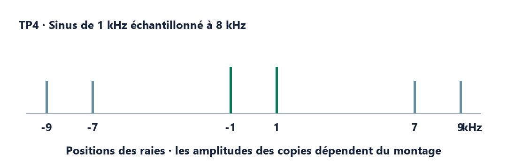

Comprendre le cours
1. Lire une mesure dans le temps et en fréquence
Le chronogramme montre l’évolution de la tension. Le spectre montre quelles fréquences participent au signal. Pour un sinus parfait, on retrouve sa fréquence fondamentale. Un signal périodique non sinusoïdal peut aussi comporter des harmoniques, multiples entiers de la fondamentale, et une composante continue.
Un oscilloscope calcule une FFT (calcul efficace de la représentation fréquentielle d’un signal) sur une trace finie. Plus la durée d’acquisition augmente, plus les points fréquentiels peuvent être rapprochés. Dans une FFT sur N points à fréquence d’acquisition fe, l’espacement vaut fe/N. Une fréquence mal alignée sur les points peut s’étaler. Observe l’effet de la fenêtre avant d’interpréter les pics autour du signal.
2. Choisir les réglages de l’analyseur de spectre
Choisis les fréquences de début et de fin, ou la fréquence centrale et l’étendue affichée. La RBW (largeur de bande de résolution en analyse spectrale) fixe la largeur du filtre de résolution. Une RBW plus étroite aide à séparer des composantes proches. Le niveau de référence règle l’échelle haute de l’affichage et aide à éviter une entrée saturée.
Le niveau en dBm correspond à une puissance et se rapporte à 1 mW. Une densité spectrale indique une puissance par unité de fréquence. Pour estimer une puissance à partir de plusieurs points, vérifie la grandeur que l’instrument exporte et la largeur associée avant d’intégrer ou de sommer.
3. Comprendre l’échantillonnage et le repliement
Échantillonner revient à prendre une mesure toutes les Te=1/fe secondes. Dans le modèle idéal, les composantes se répètent autour des multiples de fe. Pour un signal de base limité à fmax, choisir fe>2fmax sépare ces copies dans le cadre idéal. En pratique, garde une marge pour le filtre d’entrée.

Le repliement arrive lorsque des composantes distinctes se retrouvent impossibles à distinguer après échantillonnage. Un filtre anti-repliement agit avant la prise d’échantillons. Le filtrage après coup peut éliminer des fréquences visibles, mais deux composantes déjà repliées sur la même fréquence ne peuvent plus être séparées simplement.
4. Numériser une amplitude et la reconstituer
Un CAN (circuit qui transforme une mesure analogique en code numérique) mesure l’amplitude puis la ramène à un niveau quantifié et à un mot binaire. Avec n bits, il y a 2ⁿ codes. Le pas dépend de l’étendue et de la convention de l’énoncé. La quantification par arrondi prend le niveau le plus proche dans la plage. Hors plage, on peut saturer sur un niveau extrême.
Le code peut être en signe et grandeur, en complément à 2 ou en binaire décalé. Garde la convention au moment de décoder. Un CNA (circuit qui transforme un code numérique en niveau analogique) applique l’opération inverse au mot reçu et fournit la tension du niveau associé.
5. Filtrer et déplacer un signal en fréquence
Un filtre a une réponse en amplitude et souvent une réponse en phase. Le diagramme de Bode trace le gain en fonction de la fréquence. Pour mesurer la bande d’un passe-bande à −3 dB, repère la référence choisie, cherche la fréquence basse et haute à ce niveau relatif et soustrais-les.
En modulation d’amplitude sinusoïdale, le message déplace une partie du spectre autour de la porteuse. Pour un seul ton modulant, les raies latérales apparaissent à fc−fm et fc+fm. La démodulation vise à retrouver le message. Dans le TP radio, pars d’une trace de référence et vérifie le niveau dans l’unité attendue.
6. Mesurer un canal radio et une chaîne TNT
Un sinus concentre sa puissance à une fréquence. Un canal radio ou TNT occupe une plage et distribue sa puissance sur la bande. La densité spectrale en W/Hz mesure la puissance par hertz. Son intégrale sur les limites du canal donne des watts. Pour une densité constante, multiplie la hauteur par la largeur. Convertis en dBm à la fin.
Sur la distribution TNT, relève d’abord le canal reçu à l’antenne. Compare ensuite le même canal avant et après l’étage sélectif à réglages comparables. Regarde aussi les canaux voisins. Une augmentation de niveau n’indique pas à elle seule que la réception est meilleure.
Sigles et acronymes
- CAN · Convertisseur analogique-numérique
- Circuit qui transforme une mesure analogique en code numérique.
Exemple. Un CAN sur 8 bits représente une mesure avec l’un de ses 256 codes. - CNA · Convertisseur numérique-analogique
- Circuit qui transforme un code numérique en niveau analogique.
Exemple. Un CNA convertit un code en une tension de sortie. - DSP · Densité spectrale de puissance
- Puissance répartie par unité de fréquence.
Exemple. Pour obtenir la puissance d’un canal, on intègre sa densité sur la bande. - FFT · Fast Fourier Transform
- Calcul efficace de la représentation fréquentielle d’un signal.
Exemple. La FFT d’un sinus à 1 kHz permet de repérer la composante à 1 kHz. - RBW · Resolution Bandwidth
- Largeur de bande de résolution en analyse spectrale.
Exemple. Diminuer la RBW aide à distinguer deux raies rapprochées. - SNR · Signal-to-Noise Ratio
- Rapport entre niveau de signal et bruit.
Exemple. Un SNR en décibels permet de comparer le signal utile au bruit. - TNT · Télévision numérique terrestre
- Diffusion télévisée numérique par voie hertzienne.
Exemple. Le mesureur de champ permet de repérer un canal TNT reçu par l’antenne.
Du cours aux TD et TP
Questions TD & TP
TP1 et TP2 · Comparer les caractéristiques vues dans le temps et en fréquence
Démarche des TP. Mesurer période et valeur efficace sur un signal, puis utiliser l’instrument de spectre pour retrouver ses composantes.
- Sur la trace, mesure une période entre deux points équivalents. Pour un sinus centré, estime la crête et calcule la valeur efficace avec
Ucrête/√2. - Sur la FFT, mesure la fréquence du pic et compare à
1/T. S’il y a plusieurs pics, cherche leurs fréquences par rapport au fondamental et vérifie la composante continue. - Sur l’analyseur, réduis l’étendue autour du signal et vérifie le réglage de résolution. Compare avec la FFT en tenant compte de l’unité et de la normalisation utilisées.
TD3 et TP3 · Passer de la tension au niveau en dBm
Énoncés. Dans le TD3, un sinus de crête 3 V à 2 GHz est appliqué à 50 Ω. Tracer trois périodes puis calculer la tension efficace et la puissance. Dans le TP3, recommencer pour un signal de 500 mV crête à crête à 27 MHz, avec un affichage centré sur 27 MHz et une étendue de 100 kHz.
- Au TD, la période est de
0,5 ns. Trace donc de 0 à 1,5 ns. La tension efficace vaut3/√2 ≈ 2,12 V. La puissance vaut2,12²/50 ≈ 90 mW, soit19,54 dBm. - Au TP, commence par diviser les 500 mV crête à crête par deux pour trouver 250 mV de crête. Puis divise par √2. En élevant au carré et en divisant par 50 Ω, on obtient
625 µW, soit−2,04 dBm. Place la raie à 27 MHz, entre les limites 26,95 et 27,05 MHz. - Au TP6, la question porte sur le lien entre densité spectrale et puissance du canal. Délimite l’intervalle du canal, puis calcule l’aire sous la densité spectrale dans les unités linéaires. La hauteur d’un point sur la trace ne suffit pas à donner la puissance totale.
TP4 · Échantillonner un sinus de 1 kHz à 8 kHz
Énoncé. Calculer les périodes du signal à 1 kHz et de l’échantillonnage à 8 kHz, puis représenter l’allure des spectres.
- Le signal de départ a
T₀=1 ms. La commande d’échantillonnage aTe=125 µs. Dans une période du sinus, on a huit intervalles d’échantillonnage. - Dans le modèle idéal, place les raies originales à
±1 kHz. Les deux premières copies autour de 8 kHz donnent7 et 9 kHz. En prenant 5 kHz comme fréquence d’échantillonnage, les raies proches de son premier multiple se trouvent à4 et 6 kHz. - Sur la maquette, mesure ces positions et précise l’effet de la largeur des impulsions sur leurs amplitudes. Compare le constat au modèle avant d’expliquer les écarts.
TP5 · Quantifier 2,04 V et −3 V avec huit bits
Énoncé. Pour la gamme de −10 à +10 V, donner le pas et coder les deux valeurs par arrondi au niveau le plus proche.
- Avec l’étendue de 20 V divisée en 256 pas,
q=0,078125 V. La valeur positive donne2,04/q≈26,11, arrondie à 26. En signe et grandeur et en complément à 2, 26 vaut00011010. Avec biais 128, le code vaut10011010. - Pour −3 V, on obtient
−38,4, soit −38. En signe et grandeur, le code vaut10100110. En complément à 2, on calcule256−38=218, soit11011010. Avec biais 128, le code vaut01011010. - Vérifie en repartant du code, puis multiplie l’entier quantifié par le pas. La tension de niveau associée diffère un peu de la tension d’entrée.
TP7 et TP8 · Lire des seuils sur la courbe et des raies sur le spectre
Démarches des TP. Mesurer les deux bornes à −3 dB d’un filtre et reconnaître les raies attendues autour d’une porteuse modulée.
- Mesure le gain de référence au voisinage de
f₀. Soustrais 3 dB à ce niveau, puis relève les deux fréquences correspondantes et calculefhaut−fbas. - Sur le spectre modulé, repère la porteuse et les deux raies présentes de part et d’autre. Vérifie que leur écart à la porteuse correspond à la fréquence du signal modulant.
- Compare les niveaux dans les mêmes unités. Si la trace paraît tronquée ou confond plusieurs raies, regarde d’abord l’étendue de fréquence, la RBW et le niveau de référence.